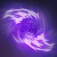
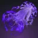
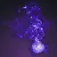
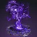
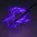

吞食
激活时恢复 70 生命值并赋予吞食，持续 10（碎片「坚韧回声」+5）秒。
重新激活再次恢复 70 生命值并刷新 5（碎片「坚韧回声」+3）秒。
吞食期间击杀：
恢复 70 生命值，获得手雷技能能量，并刷新 5（碎片「坚韧回声」+3）秒。
击杀回能：T1 级战斗人员 7.5% ｜ T2 11.6% ｜ T3 13.75% ｜ T4 20% ｜ 20%。
激活时恢复 70 生命值并赋予吞食，持续 10（碎片「坚韧回声」+5）秒。
重新激活再次恢复 70 生命值并刷新 5（碎片「坚韧回声」+3）秒。
吞食期间击杀：
恢复 70 生命值，获得手雷技能能量，并刷新 5（碎片「坚韧回声」+3）秒。
击杀回能：T1 级战斗人员 7.5% ｜ T2 11.6% ｜ T3 13.75% ｜ T4 20% ｜ 20%。
进入隐形并获得多项增益，最大雷达射程降至 24 米，持续 5（碎片「坚韧回声」+2）秒；做出攻势动作立即结束。
战斗人员无法直接锁定自己，通常朝最后可见位置射击或停火；做出高噪声动作时仅追踪但不射击。
无法看到自己的生命值条；自身雷达每 5 秒仅脉冲 0.6 秒，做出高噪声动作时同样脉冲。
带追踪（追踪投射物）或扫描（烈焰手雷）的武器与技能不会锁定自己，已锁定的也会脱锁。
攻势动作（立即破隐）：
射击 ｜ 手雷、近战、超能或瞬移技能 ｜ 施放屏障或裂痕 ｜ 召唤载具。
高噪声动作（暴露位置但不破隐）：
开始冲刺 ｜ 非瞬移的移动技能 ｜ 猎人职业技能。
武器模组「雷达增强装置」可移除雷达缩减。重新施加隐身时，只要未破隐，会刷新持续最久的一份。
虚空覆盖护盾最多 45 生命值，持续 10（碎片「坚韧回声」+5）秒。
护盾的生命值部分对战斗人员具有 70% 伤害抗性，等效约 150 点生命值。
命中虚空覆盖护盾的伤害不会中断生命值恢复。
可与其它覆盖护盾叠加（Perk「还治彼身」、职业属性护盾等），多层按先进先出原则消耗。
虚空元素拾取物。
拾取提供 11.25% 职业技能能量。
盟友无法拾取自己生成的虚空裂口。
落地停留 25 秒后消失，两次生成之间具 5 秒冷却。
被压制的敌方目标被强制打断当前技能，10 [5] 秒内无法使用技能。
不稳定的敌方目标在累计受到 190 [200] 伤害后或死亡时引爆，在 5 米内造成最高 145 [80] 虚空技能伤害。
持续 10 [6] 秒，到期未触发则自动消失；爆炸触发后随之移除减益。
施加不稳定的初始命中伤害不计入引爆阈值。
引爆后具 1 秒内置冷却，期间无法对同一名敌方目标再次施加。
虚空武器造成伤害时施加不稳定。
激活期间，对勇士的武器伤害提高 10%。
被虚弱的敌方目标承受伤害提高 15% [7.5%]，移动速度降低 20%，持续 6 [2.5] 秒。
受影响的战斗人员射击精度下降、动作减缓。
「法夫纳」、「邪冬的头盔」与「牵引器火炮」施加的虚弱时长可被任意其它虚弱效果刷新延长。

发动终结技对 ? 米内的敌方目标施加不稳定。
击杀不稳定的敌方目标生成一枚虚空裂口。
蹲伏移动速度固定为 4 米/秒，蹲伏时雷达分辨率翻倍。
蹲伏速度不会被压至 4 米/秒以下，与横越之步机制相同。
压制一名敌方目标时：
提供 +30 武器属性与 +4% 前向移动速度加成，持续 10 秒，并补满已就绪武器弹匣（内置冷却 4 秒）。
击杀被压制的敌方目标生成一枚虚空裂口。

近战击杀按敌方目标阶层返还手雷技能能量：
T1 级战斗人员 7.5% ｜ T2 11% ｜ T3 与 16.25% ｜ T4、与 25%。
虚空技能击杀使敌方目标引爆，在 7 米内造成最高 160 [130] 伤害。
击杀被虚弱的敌方目标时：
生成一枚能量球（提供 2.5% 超能能量）与一枚虚空裂口。
生成能量球具有 10 秒冷却。
手雷击杀为虚空武器赋予不稳定子弹，持续 11.25 [7.5] 秒。
不要求必须为虚空手雷击杀。
近战击杀为自己与 ? 米内的盟友触发生命值恢复。

发动终结技赋予隐身，持续 5（碎片「坚韧回声」+2）秒。
赋予自己的虚空增益持续时间延长：
吞食 +50% ｜ 隐身 +40% ｜ 虚空覆盖护盾 +50%。
猎人：武器 -10 ｜ 泰坦：生命值 -10 ｜ 术士：职业 -10
与星相「坚不可摧」不兼容。
8 米内处于至少 3 名敌方目标的腹背受敌状态时，击杀额外提供超能能量：
3 名 +0.3% ｜ 4 名 +0.65% ｜ 5 名 +1% ｜ 6 名 +1.6% ｜ 7 名 +2.3%。
两次生效之间具 1 秒冷却。
拾取能量球或虚空裂口赋予吞食，持续 5（碎片「坚韧回声」+2.5）秒。
虚空手雷命中时施加虚弱，持续 6 [2.5] 秒。
处于重伤状态击杀目标时：
赋予虚空覆盖护盾，持续 5（碎片「坚韧回声」+2.5）秒。
激活后具 8 秒冷却。
重型弹道 ｜ 扫描
接触表面时扫描 10 米视线内最多 2 名敌方目标，延迟 1 秒后释放缓慢飞行的量子光束追击目标。
光束造成 575 [65] 伤害，以 ? 米/秒飞行、最长持续 ? 秒；本体具 10 点构造体生命值，可被摧毁。
扫描目标增加至 4 名且范围扩大至 12 米，光束飞行速度提高 ?%，对战斗人员伤害提高 25%，落地 1 秒后再次触发一次扫描。
装备磁性、虚空尖刺、抑制或虚空墙壁手雷并激活星相「混沌加速」时的形态
常驻提供 1.154 倍手雷充能速度。
按住［手雷］蓄力 ? 秒后就绪，最多维持 4.5 秒。
松开［手雷］：
向前释放一道近程虚空爆炸，造成 150 [50] 伤害并击退 12.5 米扇形内的敌方目标。
同时释放 9 枚虚空矢弹（最远 12.5 米），每枚在 3 米内造成 375 [15] 溅射伤害并施加不稳定。
矢弹与初始爆炸全中时最高造成 3525 [185] 伤害。
对手持超新星自身爆炸承受的伤害降低 75%，且不会对自己施加不稳定。
轻型弹道 ｜ 轻微追踪 ｜ 粘附 ｜ 快速
附着在敌方目标或表面上，1.2 秒后触发首次爆炸，0.6 秒后二次引爆。
每次爆炸在 5 米内造成最高 472 [75] 伤害，两次合计最高 946 [150] 伤害。
重型弹道
接触时引爆，造成 5 [1] 伤害并在 4 米内释放 8 枚子弹药。
每枚子弹药引爆两次：
首爆在 4 米内造成最高 70 [16] 伤害，0.5 秒后二次引爆造成最高 115 [20] 伤害。
8 枚全中最高合计造成 1480 [288] 伤害。
额外生成 4 枚子弹药（共 12 枚）；子弹药强力追踪 5 米内的敌方目标，且对战斗人员造成的伤害提高 25%。
中型弹道
投掷后减速至阈值引爆，爆炸前具短暂延迟。
引爆在 9 米内造成最高 863 [150] 伤害，并施加压制，持续 10 [5] 秒。
自己不会被自身手雷压制。
中型弹道 ｜ 壁挂
附着于表面或敌方目标，0.67（碎片「残存回声」−0.1）秒后开始投射虚空光能。
持续光能每 0.217 秒造成 80 [28] 伤害，最多 16（碎片「残存回声」+9）次，持续 3.5（碎片「残存回声」+1.75）秒。
场域最高累计造成 1280（碎片「残存回声」2000）[448（700）] 伤害。
中型弹道 ｜ 持续伤害场域
接触表面引爆并立起一道跨度 ? 米、呈直角展开的虚空光能墙，展开过程造成最高 173 [46] 伤害。
生成 0.85 秒后开始造成伤害：每 0.2 秒造成 120 [35] 伤害，最多 18（碎片「残存回声」+9）跳，持续 3.75（碎片「残存回声」+1.875）秒。
光墙最高累计造成 2160（碎片「残存回声」3240）[630（945）] 伤害。
中型弹道 ｜ 持续伤害场域
撞击时在 5 米内造成最高 195 [25] 伤害，并生成一团虚空涡流。
虚空涡流：
撞击 0.833 秒后，将 5? 米内的敌方目标向内牵引。
生成 1.45（碎片「残存回声」−0.13）秒后开始造成伤害：在 4（+1）秒内每 0.267 秒对 4 米内的敌方目标造成 78 [20] 伤害，最多 12（+7）跳。
第 13 跳（装备碎片「残存回声」时为第 20 跳）带距离衰减，造成最高 54 [?] 伤害。
涡流场域累计造成最高 990（碎片「残存回声」1536）[240（380）] 伤害。
命中 0.617 秒后将 ? 米内的敌方目标向内牵引，半径扩大至 7 米。
生成 1.2 秒后开始造成伤害：每 0.267 秒造成 78 [20] 伤害，最多 17（碎片「残存回声」+7）跳，持续 4.3（碎片「残存回声」+2.3）秒。
第 17 跳（装备碎片「残存回声」时为第 24 跳）带距离衰减，造成最高 54 [?] 伤害。
场域最高累计造成 1380（碎片「残存回声」1926）[340（480）] 伤害。
向前突进挥砍最远 12 米，对 2 米内的敌方目标造成 595 [?] 伤害并穿透目标。
每命中一名敌方目标赋予 +10 点虚空覆盖护盾。
对受虚空减益影响或被星相「伺机而动」标记的目标，伤害提高 100% [?%]。
击杀额外赋予 +45 点虚空覆盖护盾并返还 60% 近战技能能量。
烟幕弹可附着表面最长 9 秒，附着期间在敌方雷达上产生脉冲：
撞击时为 6 米内的盟友赋予隐身，持续 5（碎片「坚韧回声」+2）秒。
探测到 ? 米内的敌方目标或直击敌方目标时引爆，释放一团烟幕。
直击与引爆：
直击造成 33 [10] 伤害，引爆在 ? 米内造成最高 120 + 24 [40 + ?] 爆炸伤害。
直击与引爆均施加虚弱与迷失，持续 8 [2.5] 秒。
烟幕（引爆后停留 5 [2] 秒）：
每 0.6 秒造成一次持续伤害并使敌方目标迷失。
0.87 秒后起跳：首跳 12.65 [?] 伤害，每跳递增 13%，第 9 跳（末跳）最高 24.8 [?] 伤害，累计最高 156.7 [?] 伤害。
伤害抗性：90% [隐身 59%? ｜ 可见 58%] ｜ 基础持续：23.5 秒（或每秒消耗 4.25% 超能能量，脱离隐身时消耗加快 50%）
轻攻击 ｜ 消耗 5%? 超能能量：
造成 1107 [?] 伤害并解除隐身，攻击频率 ? 次/秒；连续命中最高提供 +25%? 近战攻速加成。
重击 ｜ 消耗 15%? 超能能量：
打出上勾拳造成 1620 [?] 伤害，施加虚弱并赋予隐身。

捕猎者的伏击可无限次使用星相「捕猎者的伏击」，每次消耗 15%? 超能能量。
伤害抗性：90% [53%]
发射一枚陷落锚附着于表面或敌方目标，接触时将 12.5 米内的所有敌方目标向内牵引。
锚在探测到 12.5 米内有敌方目标 1 秒后激活，或经过 30 秒后自动激活。
陷落锚机制：
接触造成 2583 [?] 伤害，对 ? 米内的敌方目标施加陷落虚弱与压制（锚本体具 ? 点构造体生命值）。
将 12.5 米内的敌方目标束缚，施加陷落虚弱、压制与标记，持续 30 [10] 秒。
对被束缚目标造成的身体伤害，基础 50% 同时传导分摊给其它被束缚目标。
陷落虚弱独立成档，使目标承受伤害提高 35%。
陷落锚基础持续 12 秒，击杀被束缚的敌方目标每次延长 0.5 秒，上限 25 秒。
伤害抗性：90% [53%] ｜ 基础持续：16 秒（装备异域护甲「奥菲斯钻机」时为 20 秒）
每次施放最多发射 2 轮，每轮 3 枚莫比乌斯锚。
激活期间造成伤害会线性提升莫比乌斯锚与弓箭武器伤害，累计约 3000 伤害达到上限：锚 +127%，弓箭 +150%（弩 +75%）；伤害需求无视光能等级差，按实际造成伤害计算。
莫比乌斯锚机制：
接触造成 1076 [?] 伤害并施加压制、不稳定与虚弱（锚本体具 ? 点构造体生命值）。
将 7 米内的敌方目标束缚；锚对被束缚目标造成的伤害提高 20%，并对其施加虚弱与压制。
对被束缚目标造成的身体伤害，基础 50% 同时传导分摊给其它被束缚目标。
莫比乌斯锚基础持续 6 秒，击杀被束缚的敌方目标每次延长 0.5 秒，上限 25 秒。
获得虚空隐身时，或距上次标记敌方满 10 秒时：
将 45 [25] 米内的一名非敌方目标标记为优先目标（优先选择离准星更近的战斗人员）。
目标存活期间，自己获得「伺机而动」增益，目标承受「追猎掠食」减益，持续无限期 [15 秒]。
击杀优先目标时：
返还 ?% 手雷、近战与职业技能能量。
获得 1 层「成功狩猎」（持续 ? 秒，最多 3 层；每层提供 +? 稳定性、+? 填装速度与 0.?× 填装时长倍率）。
在目标阵亡位置释放一团大范围虚弱烟幕。
烟幕（停留 7? 秒，半径 ? 米；判定等同近战「陷阱炸弹」）：
立即在 5 米内造成最高 133 [?] 虚空近战伤害，并为自己与盟友赋予虚空隐身，持续 5（碎片「坚韧回声」+2）秒。
接触烟幕的敌方目标陷入迷失并受 6? 秒虚弱。
0.87 秒后起每 0.6 秒造成一次递增伤害：首跳 12.65 [?]，第 9 跳最高 24.8 [?]，7 秒内累计最高 ? [?]。

击杀受虚空减益影响的敌方目标时：
赋予隐身持续 8（碎片「坚韧回声」+3.2）秒，并提供真实视界持续 4 秒。
优雅处决（由本星相产生的隐身期间发动）：
近战攻击伤害提高 300% [20%]，对敌方目标施加虚弱持续 5 [2.5] 秒，并将近战突进距离延长至 ? 米。
触发后附加「过于优雅」，在 2 [12] 秒内无法再次触发优雅处决。
按［空中移动］消耗一次职业技能充能：
触发「快速坠落」并激活已装备职业技能的使用效果（激活隐身期间发动会再次施加隐身）。
猛击地面，对 ? 米内造成最高 630 [71 守护者 ｜ 700 构造体] 虚空伤害（自身带虚空增益时伤害提高 50%）。
造成伤害时恢复 ? 点生命值；击杀赋予吞食，持续 10（碎片「坚韧回声」+5）秒。
同时装备星相「隐身步法」时：
快速坠落额外施加迷失与虚弱，并为自己与 10 米内的盟友赋予隐身。
星相伤害随超过 100 的职业属性递增，200 属性时最高 +65% [?%]。
闪身动作替换为距离更远、速度更快的隐秘翻滚，并赋予隐身，持续 5（碎片「坚韧回声」+2）秒。
需冲刺 1.25 秒发动；未命中战斗人员消耗 15% 近战充能；开火状态下无法在滑铲期间发动；直击命中的守护者近战突进失效 0.5 秒。
向前突进 6.8 米并自动寻向射程内的敌方目标。
命中敌方目标时：
造成 1073 [110] 直击伤害。
对命中目标后方最远 7 米内的敌方目标造成 391 [40] 扇面伤害。
对命中目标 2 米内的敌方目标施加压制。
击杀赋予 45 点生命值的虚空覆盖护盾，持续 10（碎片「坚韧回声」+5）秒。
向前掷出一面受重力影响的虚空护盾，最多弹跳 4 次并主动追踪附近的敌方目标。
每次命中造成 400 [70] 直击伤害，并赋予 15 点生命值的虚空覆盖护盾。
伤害抗性：90% [53%] ｜ 基础持续：17 秒（或每秒消耗 5.88% 超能能量）
轻攻击 ｜ 每次消耗 4.5% 超能能量（终结一击消耗 2%）：
地面 3 连击造成 797 [?] 与 856 [?] 伤害；空中 2 连击造成 797 [?] 伤害。
连击终结一击在 ? 米锥形范围内造成 1516 [?] 伤害。
重击（格挡） ｜ 移动速度降低 20%：
展开一面不可穿透、但盟友可穿透射击的虚空屏障。
自己对所有正面伤害完全免疫；触碰屏障的敌方目标每 0.05 秒承受 7 [?] 伤害。
格挡伤害可生成能量球（提供 2.5%? 超能能量，内置冷却 1.5 秒）。
格挡可大幅提高圣盾投掷伤害（最高 +1787%）并延长超能持续时间（最高 +?%）。
来自敌方的伤害完全无效化且不触发命中效果；承受技能伤害会消耗超能能量但部分回补持续时间。
屏障后方 5 米内的盟友：
武器伤害提高 25%，赋予 45 点生命值的虚空覆盖护盾、+50 操控性与 +50 填装速度，武器每 2.5 秒补满弹匣。
脱战 3 秒后虚空覆盖护盾按 9 点生命值/秒自动恢复。
后方盟友越多，格挡被动消耗越低：1 名 20% ｜ 2 名 35% ｜ 3 名 ?% ｜ 4 名 ?% ｜ 5 名 50%。
手雷技能 ｜ 不消耗超能能量（两次使用间隔 3 秒）：
投出哨兵圣盾，造成 723 [?] 伤害，最多弹跳 ? 次并追踪 ? 米内的敌方目标。
施法期间伤害抗性：?% [?%]
召唤 3 柄虚空战斧依次朝准星掷出：
战斧触地在 ? 米内造成最高 1250 [?] 伤害并将敌方目标向内牵引；0.6 秒后引爆，在 ? 米内造成最高 1750 [?] 伤害并施加虚弱。
引爆后战斧插地转化为可拾取圣物武器，最多停留 20 秒。
战斧伤害仅能受虚空武器激涌与敌方减益提高。
施法期间伤害抗性：?% [26.5%]
施放时补满一次手雷技能充能，并生成 3 枚能量球（每枚提供 2.3% 超能能量）。
展开一座防护穹顶（具 8000 点构造体生命值，对战斗人员具 75??% 伤害抗性，内含一枚 200 点生命值核心）：
穹顶以核心为中心覆盖 8 米半径，持续 30 秒（超能属性在 200 时最多延长 10 秒）；摧毁核心即摧毁护罩。
敌方对穹顶本体伤害提高 50%，技能伤害倍率另计。
通常任何投射物无法穿透穹顶；当穹顶内存在战斗人员时，自己与盟友可穿透射击。
部署或重新部署时将 15 米内的战斗人员向内牵引。
重新部署：
部署 3 秒后核心可由自己拾取并投掷重新部署，每次超能最多重新部署 2 次（环绕的能量球指示剩余次数）。
手持核心期间，护罩剩余持续时间按（77 ÷ 拾取时剩余光能护甲秒数）每秒加速流逝。
施放超能时：
为 15 米内的盟友赋予 45 点生命值的虚空覆盖护盾。
施放强化屏障时：
为自己与 15? 米内的盟友赋予 45 点生命值的虚空覆盖护盾。
强化屏障承受来自的伤害提高 20%。
位于强化屏障后方时：
每秒赋予 11 点虚空覆盖护盾。
仅限熔炉竞技场：巍峨屏障基础冷却覆盖为 100 秒，集结屏障覆盖为 80 秒。
虚空技能造成伤害时施加不稳定；不稳定引发的爆炸本身同样计为虚空技能伤害。
不稳定爆炸触发时：
为自己与 40 米内的盟友恢复 90 点生命值。
为超能「哨兵圣盾」额外提供技能「圣盾投掷」。
虚空覆盖护盾激活或身处超能「黎明护罩」内时：
击杀返还 9% 手雷技能能量与 9% 近战技能能量。
近战伤害提高 160% [20%]，近战突进射程提高至 5.5 米。
近战击杀赋予 10 点生命值的虚空覆盖护盾。
基础未充能近战命中计为虚空充能近战命中（异域护甲「毁灭之牙肩甲」与「断绝末路」除外）。
按住［手雷］展开虚空护盾，装备本星相时手雷基础冷却覆盖为 152 秒。
护盾格挡机制：
护盾对正面格挡的伤害提供 95%? [64%] 伤害抗性并嘲讽正面战斗人员；触碰护盾的战斗人员陷入迷失。
每秒赋予 10 点虚空覆盖护盾，持续 5（碎片「坚韧回声」+2.5）秒，维持护盾每秒消耗 7.5% 手雷能量。
格挡伤害时前向移速降低 50%?（持续 0.5? 秒），同时返还手雷能量（回能递减，? 秒后降至 ?%）。
持盾期间不可攀爬，冲刺会中断护盾。
装备超能「哨兵圣盾」时，格挡任意伤害为盟友生成一枚能量球（提供 2.5% 超能能量，内置冷却 4.5 秒）。
松开［手雷］或耗尽手雷能量时：
消耗 50% 手雷能量向前方释放冲击波，对 11 米内的目标造成手雷伤害。
未格挡伤害时基础造成 430 [64?] 伤害；随格挡量线性递增（达到上限所需格挡量为 ?），最高造成 1584 [178?] 伤害。
使用本冲击波击杀赋予吞食，持续 10（碎片「坚韧回声」+5）秒。
固有 2 次近战技能充能。
发射一颗最长飞行 2 秒的虚空能量奇点。
奇点主动追踪 2? 米内最近的敌方目标，触碰引爆：
击退 3.75 米内的敌方目标，造成 527 [60] 伤害并施加不稳定。
贴身触发［自动近战］时：
消耗一次充能发动近战突进，同样造成击退与不稳定，但伤害按距离衰减 65% 至 50%（距离越近伤害越低）。
被口袋奇点命中的敌方守护者 0.5 秒内近战突进失效，且正在进行的滑铲会被打断。
伤害抗性：90% [49%]
释放一枚缓慢飞行、带追踪的新星炸弹：
撞击或被打爆时引爆，在 12 米内造成最高 3241 [?] 伤害。
炸弹本体具 400 点构造体生命值，自己对其造成的伤害提高 300%。
引爆后分裂出 6 枚追踪弹缓慢追敌：
每枚在约 4 米内造成最高 649 [?] 伤害（各具 100 点构造体生命值）。
炸弹本体与追踪弹均可在半空中被打爆，自己对其造成的伤害显著更高。
伤害抗性：90% [49%]
投掷一枚沿弧线快速飞行的新星炸弹，接触表面或目标引爆，在 ? 米内造成最高 3021 [?] 伤害。
引爆 0.43 秒后在爆炸点生成一团奇点，立即将敌方目标向内牵引：
奇点对 ? 米内的敌方目标每 0.13 秒造成 52 [?] 伤害，持续 10 秒。
期间每隔 ? 秒再次将 ? 米内的敌方目标向中心牵引。
伤害抗性：90% [58%] ｜ 基础持续：24.5 秒（或每秒消耗 4.1% 超能能量）
轻攻击 ｜ 消耗 5% 超能能量：
在 6 米内造成最高 964 [200] 伤害并施加不稳定（最远边缘保留 50% 伤害）。
长按［开火］0.6 秒可蓄力：将约 14 米内的敌方目标向自己牵引，并将伤害与半径线性提高 120%；蓄力期间移动速度降低 ?%。
重击 / 冲刺 ｜ 发动暗影瞬移，消耗 3.5% 超能能量：
朝移动输入方向快速瞬移，并向四个主方向各释放一枚虚弱追踪器（共 4 枚）。
追踪器锁定 8 米内的敌方目标，接触造成 193 [?] 伤害并施加虚弱。
按住［手雷技能］为手雷过载充能，并额外提供一次手雷技能充能。
逐项强化效果见「手雷技能」各条说明。
施放裂痕时获得「虚空之魂就绪」，持续 25 秒，最多叠加 2 个。
用武器射击命中敌方目标时，放出虚空伙伴飞向目标，到达后展开吸取场域。
吸取场域（持续最长 9.25 秒）：
每 0.7 秒对 10 米内的敌方目标造成 41 [10] 虚空手雷伤害，并施加虚弱持续 4 [2.5] 秒。
场域内的战斗人员同时承受压制。
伙伴本体具 150 点构造体生命值，可被摧毁；就绪未发射前具 ?% 伤害抗性。
在吸取场域内击杀敌方目标返还职业技能能量：
T1 级战斗人员 10% ｜ T2 15% ｜ T3 20% ｜ T4 以上 50% ｜ 33.4%。
虚空技能击杀赋予吞食，并将其升级为强化吞食。
强化吞食：
激活时恢复 140 生命值，持续 10（碎片「坚韧回声」+5）秒。
重新激活再次恢复 140 生命值并刷新 5（碎片「坚韧回声」+3）秒。
强化吞食期间击杀：
恢复 140 生命值，获得双倍手雷技能能量，并刷新 5（碎片「坚韧回声」+3）秒。
击杀回能：T1 级战斗人员 15% ｜ T2 23.2% ｜ T3 27.5% ｜ T4 40% ｜ 40%。
充能近战命中后，近战技能替换为「灵魂虹吸」，持续 20 秒。
发动技能束缚 20 米内最多 4 名敌方目标：
在 3.2 秒内将目标向自己牵引，每 0.2 秒造成一跳递增近战伤害；末次牵引（首跳后 0.6 秒）必定使敌方目标踉跄。
每名目标每跳为自己提供 +15 点虚空覆盖护盾（持续 15（碎片「坚韧回声」+7.5）秒）与 ?% 职业技能能量。
伤害略带随机波动，每次施放对每名目标平均造成约 1320 近战伤害；单次各跳伤害约为 2 / 11 / 26 / 62 / 100 / 137 加收尾 879，PvP 各跳伤害为 [? / ? / ? / ? / ? / ? 加收尾 ?]。
装备碎片「坚韧回声」时，覆盖护盾时长仅在未超过 15 秒时可刷新至 22.5 秒。